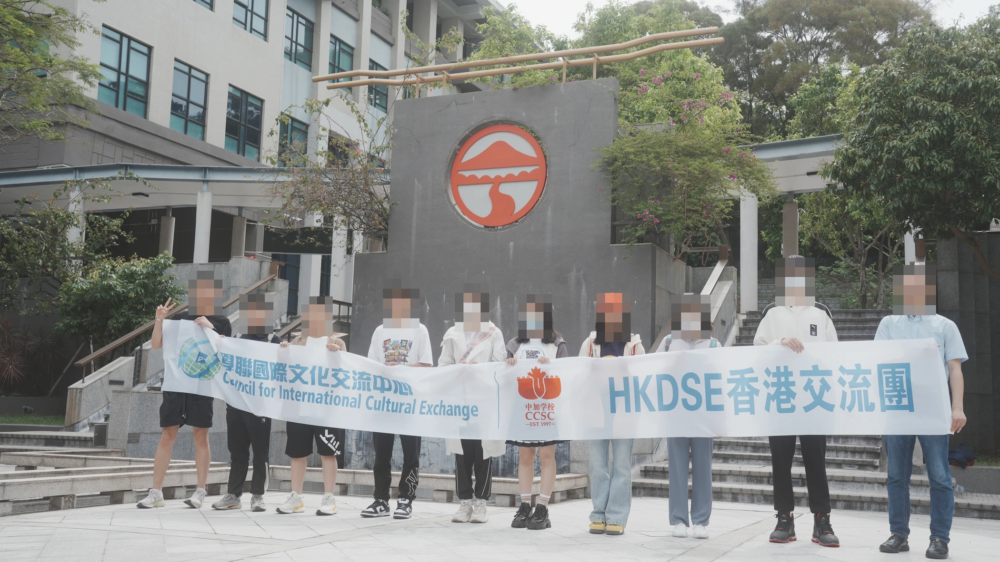

DSE 與大學課程輔導
中學生需要鞏固學科基礎、適應 DSE 的課程要求。大學生則可能在個別科目或專業概念上遇到困難。我們配合學生的課程進度安排輔導，從未掌握的內容入手，協助改善學習方法及提升成績。
 HONG KONG · VICTORIA HARBOUR
HONG KONG · VICTORIA HARBOUR
我們教過不同學制與教育背景的學生。
先了解學生正在學甚麼、哪些內容未掌握，
再按課程需要配對老師。
自 2022 年起，我們持續為北京中加學校學生提供各科遙距輔導，配合課程進度和學生的學習需要，協助學生理解學科內容。

背景提升從學生想進一步了解的學科出發。我們把高校課堂、實作與參訪連在一起，讓學生有機會接觸新的課題，幫助學生判斷自己的興趣與升學方向。
走進高校課堂，參與專題講授、討論與實作。學生可按興趣選擇課程，接觸大學的教學方式，了解一門學科的研究內容與應用。
課題涵蓋人工智能、物聯網及機械人編程，也延伸至虛擬實境與遊戲設計。學生透過操作與小組任務，嘗試把概念用於具體問題。
從金融與經濟的基礎概念，到數據分析在商業中的運用，結合案例討論，了解企業如何分析問題及作出決策。
教育與心理、傳媒及視覺設計等方向，適合希望探索學科興趣的學生。透過專題學習，認識不同專業的思考方式與課程內容。


以香港高校參訪為主，配合學長姐的經驗分享。
學生可以帶着自己的選科和升學問題，
了解不同院校的學習環境與課程特色。
可安排香港八校遊覽，亦可按興趣選擇重點院校。參訪著重認識教學環境與學科特色，讓學生比較不同院校，思考適合自己的學習方向。
由學長姐分享選科與升學經驗，介紹所修課程的要求和學習方法。學生可直接提問，了解在大學學習時會遇到甚麼問題。
對科技有興趣的學生，可結合大灣區企業或科研場地參訪，接觸無人機、機械人及人工智能應用，了解課堂知識如何用於實際工作。
以多對一方式，按學生的學科興趣及升學方向安排參訪重點，預留時間與學長姐交流，集中討論個人關心的問題。
為學校及學生團體設計共同的研學主題，把校園導覽、專題學習和小組交流串連起來，配合學生年級與團體需要安排。


從中學升大學、副學士升學，到學士升碩士，
我們按學生目前的學歷與成績，
協助選擇申請方向並準備所需資料。
先了解學生目前的學習背景與升學目標，再比較課程內容及入學要求，梳理適合申請的方向。
把修讀課程與研學項目中學過的內容整理清楚，說明自己的學科興趣及實際參與，作為準備申請材料的基礎。
按目標課程梳理所需資料與申請次序。需要改善學業表現的學生，可同時配合學科輔導，準備下一階段的升學。
香港科學教育協會
協會立足香港，服務不同學習階段與教育背景的學生。我們的團隊經驗涵蓋學科教學、跨學科課程設計及研學組織，熟悉學生在轉換學制與升學時面對的學習需要。
文遊八方
香港嶺先文化傳播有限責任公司
FIRST CHOICE EDUCATION CONSULTANT INC.
我們重視學生能否理解所學、提出問題，並逐步形成自己的判斷。課堂輔導與實地學習，都應讓學生更清楚自己的興趣與下一步方向。